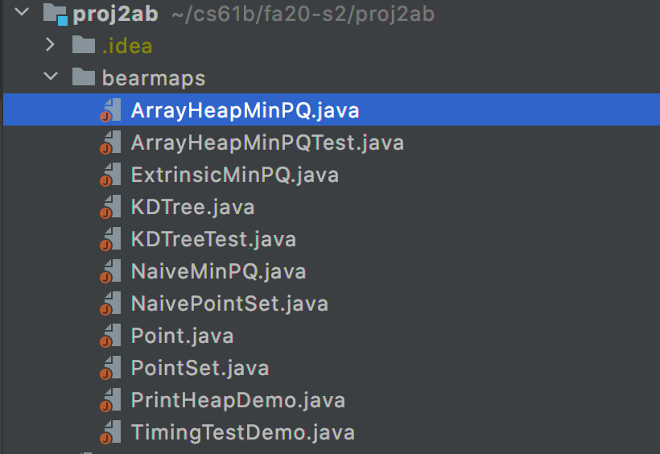
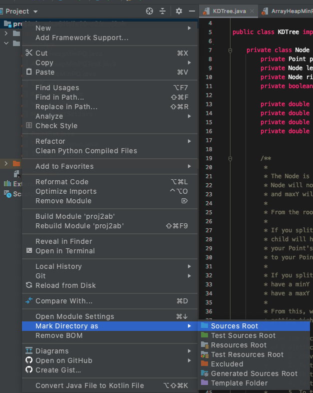
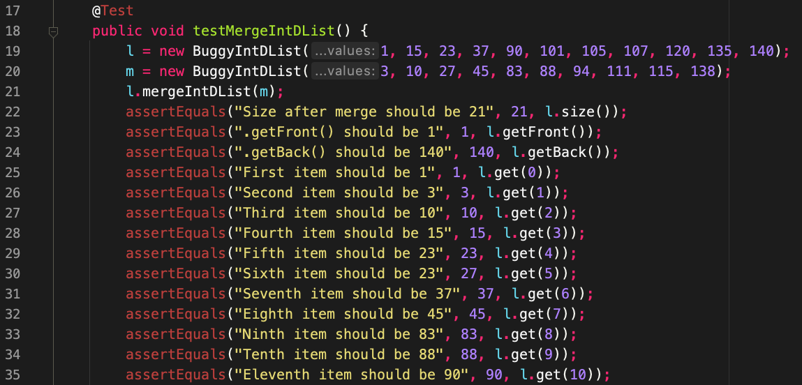
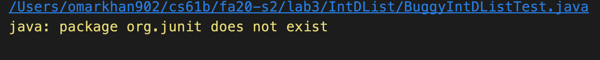
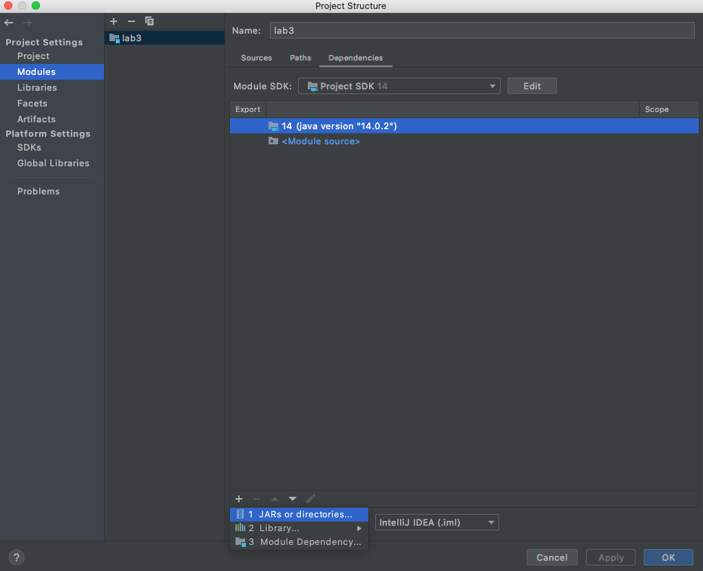
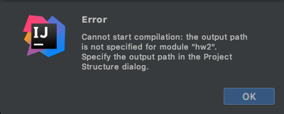
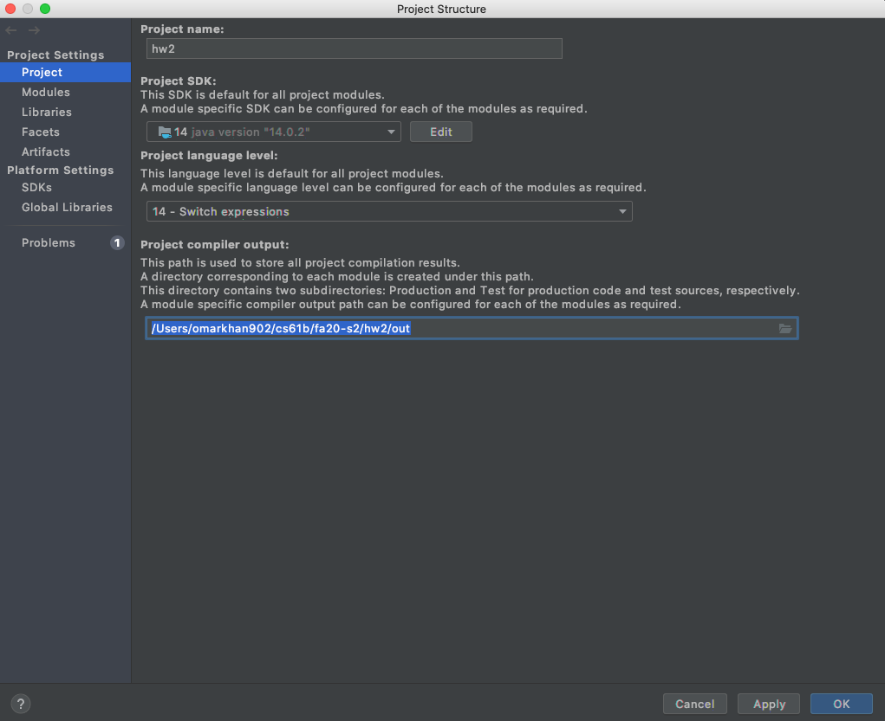

- I can’t run my Java file/Files don’t show up as java files
- JUnit things show up as red in IntelliJ
- package org.junit does not exist
- Output path is not specified
- Everything looks right but it still doesn’t work!
This document is intended to help you through frequently encountered weird technical failure scenarios (WTFS) in IntelliJ. It will be populated as questions arise.
I can’t run my Java file/Files don’t show up as java files

If your files look like this then you haven’t properly imported the project.
To fix this, you must simply right-click the outer-most folder which will be your
assignment folder, in this case, proj2ab, and scroll down to “Mark directory as …”
and hit “Sources Root”. It’ll look like this:

See Lab 2 Setup for additional instructions on importing a new project.
JUnit things show up as red in IntelliJ

This means that you forgot to add the CS 61B javalib as a library for this project!
IntelliJ cannot find the JUnit specific things like @Test or assertEquals
since you forgot to import them.
Every time you start a new assignment (unfortunately, EVERY TIME) you must readd
the javalib. To do this, simply go to “File” -> “Project Structure” -> “Libraries”
and add the javalib inside your repo. See Lab 2 Setup
for additional instructions on adding Java libraries.
package org.junit does not exist

This sometimes happens with IntelliJ where you’ve added the correct libraries,
but cannot run the code. To fix this, you need to add the libraries as a direct
dependency to the module. To do that, go to “File” -> “Project Structure” ->
“Modules” -> “Dependencies” and hit the “+” icon in the bottom left and select
“JARs or directories”. Now, highlight every .jar file in your javalib folder
and add them. This is what the setting should look like right before you add
the JARs:

Output path is not specified

IntelliJ puts all the compiled Java .class files in a special folder called
out. You may have seen it before. Usually, IntelliJ will be able to determine
where to put the out folder, but sometimes it cannot and needs your help. To
specify where to put the out foler, go to:
“File” > “Project Structure” > “Project” > “Project compiler output” and simply
add the output path. The output path should be of the form path/to/assignment/out
where the prefix is dependent on the path to your assignment (hw, lab, proj, etc)
and the suffix must be /out. Example for homework 2:

Everything looks right but it still doesn’t work!
Sometimes the easiest thing is to simply do it all over again. Even if you know you just did everything correctly, starting over very often just fixes the problem. First close the project (“File” -> “Close Project”), quit the IntelliJ application, and then reimport the project from the beginning.